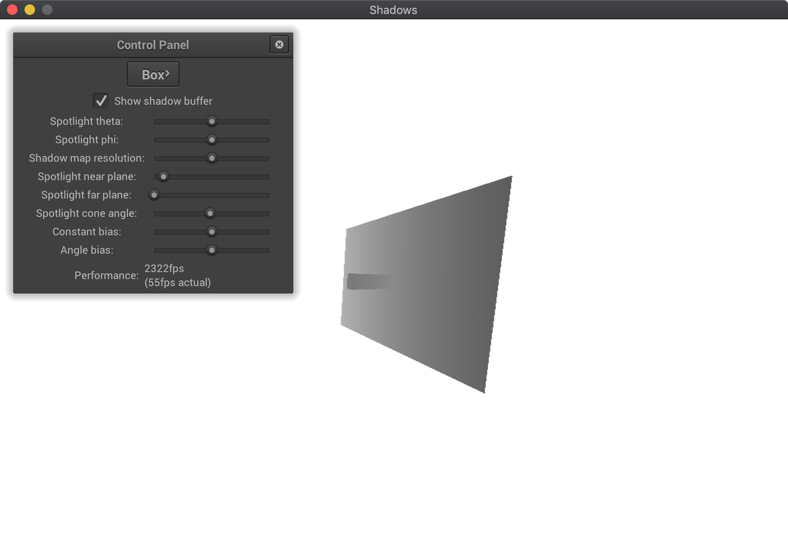
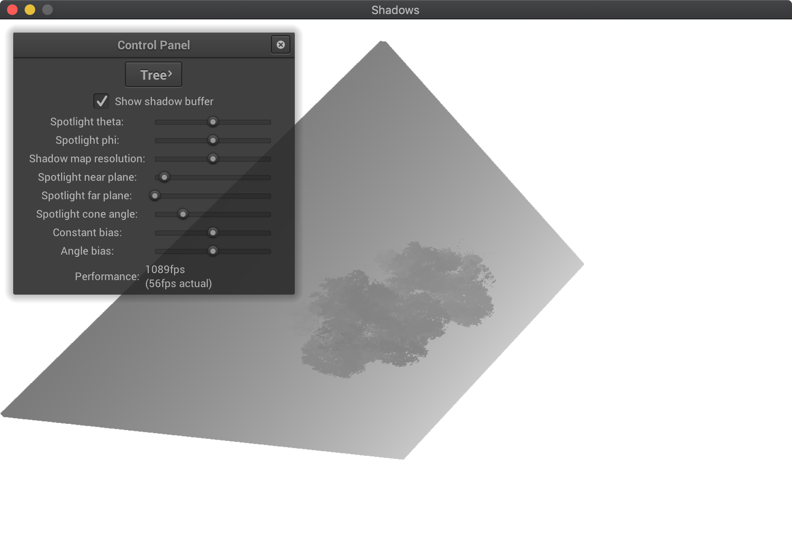
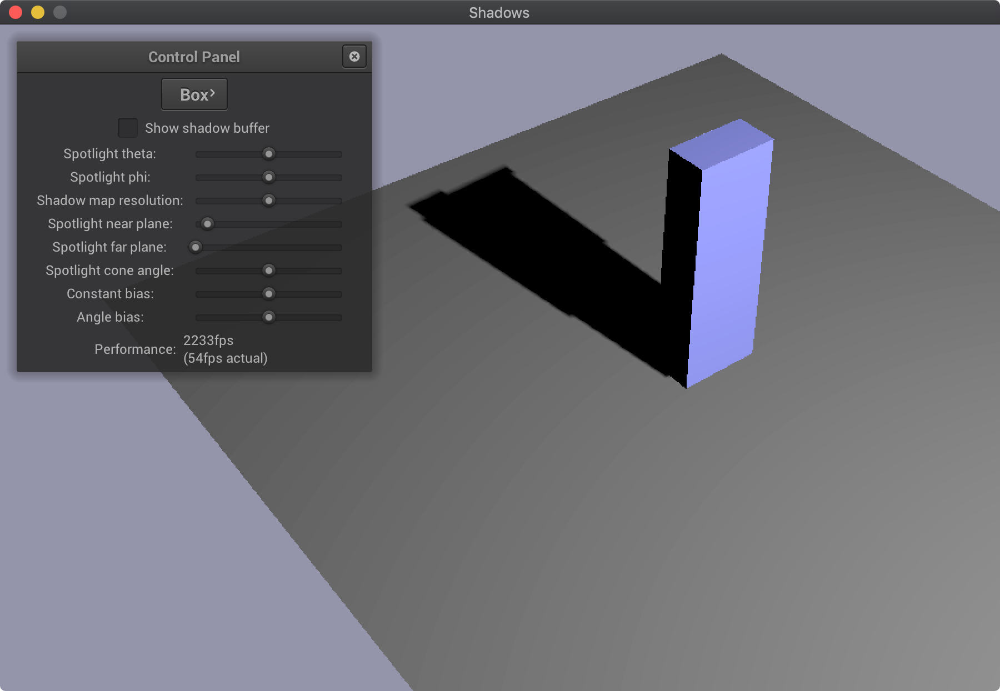
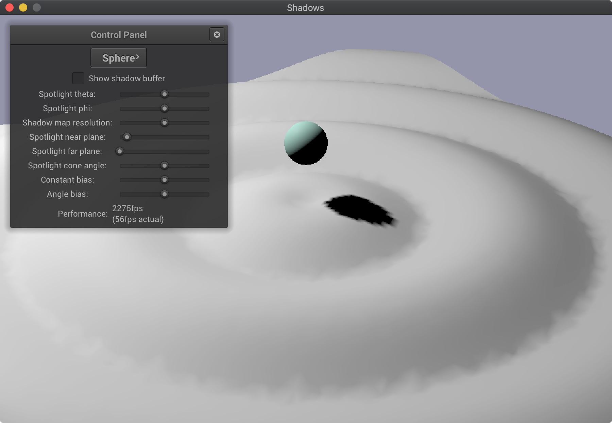
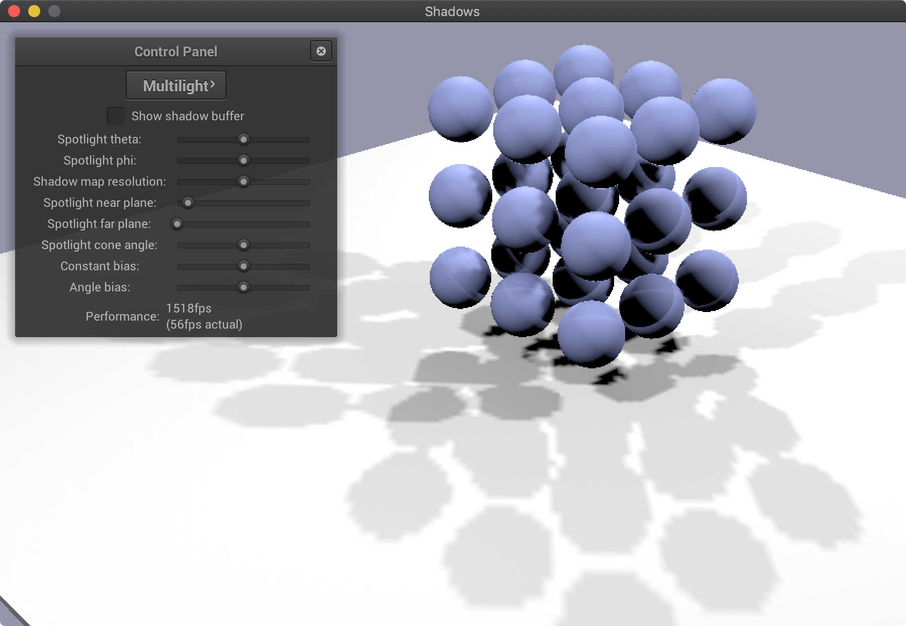
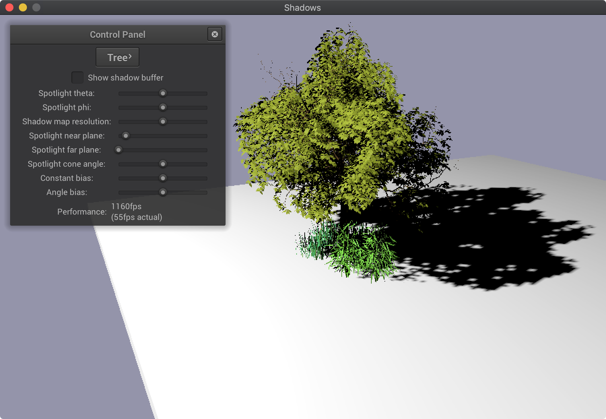

\(\newcommand{\vx}{\mathbf{x}}\)
\(\newcommand{\vp}{\mathbf{p}}\)
\(\newcommand{\vf}{\mathbf{f}}\)
\(\newcommand{\ve}{\mathbf{e}}\)
\(\newcommand{\vv}{\mathbf{v}}\)
\(\newcommand{\vC}{\mathbf{C}}\)
\(\newcommand{\th}{^\text{th}}\)
Due: April 30 2019 (11:59pm). Work on your own or in groups of 2, as you prefer.
In this assignment you will add support for shadows to a rendering system similar to (but a bit simpler than) the one you built for the Shading assignment. We supply you with a working deferred renderer that support only unshadowed point lights, and some scenes that use spotlights; your job is to implement the spotlights so that they cast shadows, using shadow maps.
Introduction
Shadow maps require lights to have a limited “field of view” (otherwise we need to use multiple maps per source), so in this assignment only spot lights cast shadows. The model import code maps spot lights in the input file to instances of the class SpotLight, which adds information about the direction and cone angle to the PointLight class. These lights become spotlights that illuminate a square pyramid for which the angle between opposite sides is equal to the cone angle.
The framework uses a deferred shading approach like the Shading assignment; in the first pass the G-Buffers are filled with information required for shading, including the normal and material properties. (Only isotropic microfacet materials are supported, which makes things a bit simpler.) In the second pass we compute shading from all the point light sources in the scene. Your job is to add an additional illumination phase that does an additional shading pass for each spotlight in the scene. Each spotlight requires two passes: first, render the shadow map for one spotlight; and second, add the illumination from that light into the output buffer.
Rendering shadow maps
Implementing the shadow-map pass requires some additional work in the C++ code, together with a new (but very simple) shader program. You'll find that ShadowsApp already contains a GLFramebuffer called shadowBuffer that is set up with a depth attachment but no color attachment. It is automatically reallocated as the user adjusts the shadow map resolution using the slider.
Here are the steps we followed to implement shadow map rendering. You will find TODOs for these but feel free to deviate from this plan if you prefer.
- Write a vertex and a fragment shader for shadow map rendering. The vertex shader needs to transform points from object space to light space, and the fragment shader can do absolutely nothing. You will need to use a uniform matrix or matrices to transform points from object space, through model, light-view, and light-projection matrices, to light space; other than the names of the matrices the shader is identical to a standard vertex shader that supports no extra vertex attributes. At initialization time you'll need to compile this program in the same way as the übershader.
- In ShadowsApp::drawContents, add a third shading pass before the “render to screen” pass. In this pass (for now just for the first SpotLight in the scene, if there are any), render the shadow map. This means binding shadowBuffer, binding your shadow program, and rendering the scene using the same mechanism that is used in the first pass. However, when you call glDrawBuffers you will just pass one buffer with the value GL_NONE to indicate there is no color buffer being used. Like the first pass you need to enable the depth test.
-
You will need to write some code to compute viewing and projection matrices for spotlights. This computation is exactly like a perspective camera, and you might like to borrow from the implementation of PerspectiveCamera. Note that the light's direction and position are in the local space of the light's scene node, so you will need to account for that node's modeling matrix; you can find the node using light->getNode().
-
You will need an “up” direction to compute the viewing matrix for the light. Any method of determining an up vector is fine, though ideally it should not break regardless of the light's direction.
-
To allow the user to move lights around in the scene, you'll want to rotate the spotlight around the world's origin, as defined in spherical coordinates by spotLightThetaAdjustment (an angle in the range \([-\pi, \pi]\)) and spotLightPhiAdjustment (an angle in the range \([-\frac{\pi}{2}, \frac{\pi}{2}]\)). To ease construction of this rotation, we've provided you with the method getSpotLightRotation().
-
You will need a field of view for the projection matrix. The field of view of the spotlight is available via SpotLight::getConeAngle() (keep in mind this is the full FOV angle, not the half angle). To allow for slider adjustments to this angle, we multiply it by the member variable coneAngleAdjustment and clamp it to reasonable values before using it. These adjustments are done for you in the method getAdjustedConeAngle(), which returns the half angle of the cone for a particular light.
-
You will need near and far distances for the projection matrix. Make use of the slider-adjustable spotLightNear and spotLightFar variables, which are meant to apply to all spot lights in the scene.
-
You will need a way to provide these matrices to the vertex shader. We did this by creating a member function setSpotLightUniforms that operates analogously to setLightUniforms but takes a SpotLight rather than a Scene, computes that light's projection and viewing matrices, and uploads them to uniforms.
-
You will also need to provide a way to bind the shadow shader program instead of the übershader program when drawing, and to provide the modeling matrix of each node to the shader as it's drawn; we did this by modifying renderNode, passing a flag down the recursion that indicates whether this is the render or shadow pass.
When you are done with this you will be able to use the framework's “show shadow buffer” feature to see a depth map from the light's point of view. This map should not change when you move the camera, but it should change when you move the light source using the controls in the panel. Below are some examples of what you might see, though bear in mind that your program might look slightly different depending on how you choose your up vector. Also, the scenes might look slightly squashed; this is expected, because we are rendering a square texture into a rectangular screen.
|  |
 |
| Box Scene Shadow Buffer |
Tree Scene Shadow Buffer |
Adding the illumination pass
Once you have shadow depth maps rendering, you can use them to make shadows! This is mainly a matter of shader programming. As sketched out above, you should use the strategy of rendering each spotlight in a separate deferred shading pass, after the existing rendering pass that accounts for all other sources of light. Using separate passes per light means you can reuse one shadow map for all the lights, and the shader only needs to have access to one shadow map at a time.
There is a design decision here: use the same übershader for illumination passes as for the initial pass, or use two separate shaders. The tradeoff is repeated code and managing an extra shader program vs. clunkiness associated with having parts of the shader inactive in each pass. We used the single-shader approach.
This part of the implementation is mainly shader programming, though you do need to add the C++ code that orchestrates the illumination pass. Here are the steps we followed.
- First, get unshadowed rendering in multiple illumination passes working. For now you can leave your shadow map rendering code alone or comment it out.
- Add the illumination pass to drawContents. This pass happens in a loop over all spotlights in the scene, and from the C++ side it is nearly identical to the first übershader pass (Pass 2). The key differences are that you do not clear the buffer (since you want to accumulate into it), and you need to enable additive blending using glEnable and glBlendFunc (don't forget to disable it afterwards!).
- Work out a way to provide the spotlight information to uniforms in your shader; you'll need the position, color, and attenuation just as for point lights. We did this by extending our setSpotLightUniforms method. Remember you only need to have the information about one spotlight at a time, since you run the shader program once for every spotlight.
- In the shader, compute lighting from the spotlight just like it already does for point lights, and write the result into the fragment color; because you have additive blending set up, it will be added to the color already present in the srgbBuffer.
At this point you should be able to see renderings of all the scenes that are fine but don't have shadows.
- Second, add (aliased) shadows.
- Put your shadow-map rendering code in the loop over spotlights, so that you render a shadow map for each light before you run its illumination pass.
- Arrange to provide the shadow map texture to the shader in the spotlight illumination pass. Provide it through a sampler2D uniform just like any other texture; a depth texture's single component shows up in the first (red) component when you do a texture lookup.
- Work out a way to provide the same light-view and light-projection matrices as in the shadow map pass as uniforms in this illumination pass, as well as the slider-adjustable shadowConstantBias and shadowAngleBias.
- Extend your shader to test for shadows. We wrote a shadowFactor subroutine that returns a floating point number 0 or 1 to be multiplied with the light's shading contribution. Take the shading point (which the übershader already computes in eye space) and transform it into light space (you will need to work out a way to get it into the same space where your light-view matrix operates). Don't forget the perspective divide. Use the x and y components of this point to look up into the shadow map (don't forget about the difference between \([-1,1]^3\) NDC and \([0,1]^2\) texture coordinates). Use the z coordinate of the light-space point to perform a shadow depth comparison (don't forget about the difference between \([-1,1]^3\) NDC and the \([0,1]\) range of a texture lookup). With this correctly implemented you will see shadows with some artifacts.
- Implement shadow bias to remove the discretization artifacts. Bias the depth value by \(a + b\tan\theta\) before the shadow test, where \(a\) is the constant bias, \(b\) is the angle-dependent bias, and \(\theta\) is the angle between the surface normal and light direction. Note that \(\tan\theta\) can grow without bound at grazing angles, so you should clamp this to a reasonable value (say, 10).
At this point you should have reasonably clean shadows, but with blocky and aliased shadow boundaries.
- Third, add percentage-closer filtering. This is a matter of turning it on, since the texture unit already knows how to do it.
- Change the type of the uniform for the shadow depth texture to sampler2DShadow. Note that, on the C++ side, you must explicitly set this uniform to a texture unit even if you never read from it! If you don't do this, you will encounter a GL_INVALID_OPERATION error.
- Change the call to texture() that you are using to sample the depth texture. With a shadow sampler, rather than reading a single shadow-map depth and comparing it to the surface depth yourself, you pass in the surface depth and the sampler tells you how many of the neighboring texels pass the shadow test, by returning a fractional value between 0 and 1. The texture coordinates and the comparison value are passed in the xy and z components, respectively, of the vec3 argument to texture.
- Enable depth comparison from the C++ side. Use glTexParameteri to set the parameter GL_TEXTURE_COMPARE_MODE to GL_COMPARE_REF_TO_TEXTURE and the parameter GL_TEXTURE_MAG_FILTER to GL_LINEAR.
At this point, your shadows should look clean, smooth, and sharp when the resolution is high enough (and cone angle low enough), and somewhat blurry when the resolution is lower. That is a basic shadow map! See below for some example images from our solution.
|  |
 |
| Box Scene |
Sphere Scene |
|  |
 |
| Multilight Scene |
Tree Scene |
Things to watch for:
- To get smooth shadow boundaries, when is it better to decrease the cone angle, and when is it better to increase the shadow map resolution?
- In the Box scene, how does bias affect the shadow at the point of contact with the ground plane?
- Why do we use a bias that has a constant component and an angle-dependent component?
- In this assignment, the edges of the cast shadows will be fairly sharp. How might you go about implementing softer shadow edges?
What to Submit
You should submit a ZIP file containing all the source codes and data in the Shadows directory. All the code you have written should be well commented and easy to read, and header comments for all modified files should appropriately indicate authorship. Be sure to cite sources for any code or formulas that came from anywhere other than your head or this assignment document. Also, put in the directory a README file explaining any implementation choices you made or difficulties you encountered.
{kind=link}
{kind=link}
{kind=link}
{kind=link}
{kind=link}
{kind=link}